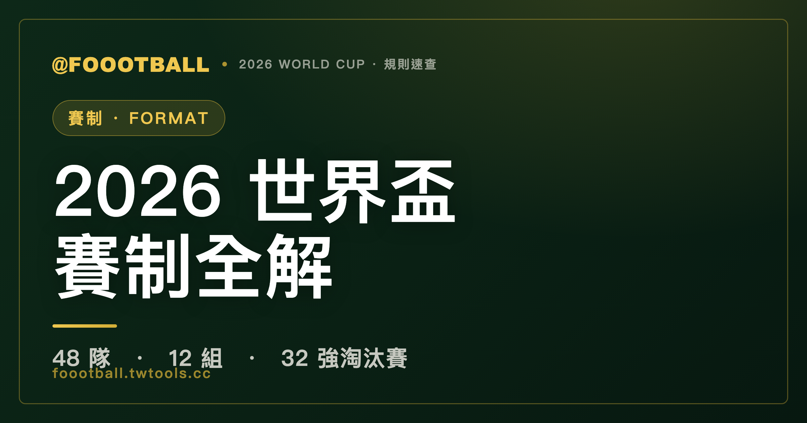

2026 世界盃賽制全解：48 隊、12 組、首度出現的 32 強淘汰賽
2026 世界盃首度擴軍到 48 隊，分 12 組（A–L）每組 4 隊單循環。每組前 2 名加上 8 個成績最佳的第三名共 32 隊晉級，進入世界盃史上第一次出現的『32 強淘汰賽』，再一路打到 16 強、8 強、4 強、決賽。全程 104 場，冠軍奪冠路徑最多踢 8 場。

2026 年世界盃是史上規模最大的一屆，也是賽制變動最大的一屆。隊伍從 32 隊擴編到 48 隊，比賽從 64 場暴增到 104 場，還憑空多出一個過去從未在男子世界盃出現過的淘汰賽輪次。對習慣了「8 組、每組 4 隊、16 強淘汰」老格式的球迷來說，這屆有不少地方要重新熟悉。這篇把整套賽制從頭到尾拆給你看。
基本盤：48 隊、12 組、每組 4 隊
48 支球隊被分進 12 個小組（A 到 L），每組 4 隊。小組賽採單循環（round-robin），每隊跟同組另外三隊各踢一場，所以不管輸贏，每支球隊都保證有 3 場小組賽。
| 項目 | 2022 卡達 | 2026 美加墨 |
|---|---|---|
| 參賽隊數 | 32 | 48 |
| 小組數 | 8 組 | 12 組 |
| 每組隊數 | 4 | 4 |
| 總場次 | 64 | 104 |
| 淘汰賽起點 | 16 強 | 32 強 |
| 冠軍最多場數 | 7 | 8 |
值得一提的是，FIFA 最早（2017 年）規劃的 48 隊版本，其實是「16 組、每組 3 隊」。後來在 2023 年改成現在的「12 組、每組 4 隊」——主要是因為卡達世界盃證明了 4 隊小組到最後一輪兩場同時開踢、生死未卜的戲劇張力，是 3 隊小組給不了的。
怎麼晉級：前 2 名 + 8 個最佳第三名
這是 2026 賽制最需要重新適應的一點。
- 每組前 2 名直接晉級 → 共 24 隊
- 12 個小組的第三名之中，再挑出成績最好的 8 隊晉級 → 共 8 隊
- 兩者相加 = 32 隊，進入淘汰賽
也就是說，小組第三名不再像過去那樣一律打包回家——有三分之二的第三名（8/12）能搭上末班車。第三名之間怎麼比、誰能擠進這 8 個名額，牽涉一整套排序規則，我們在〈積分計算與晉級規則〉那篇單獨講。
淘汰賽：史上第一次的「32 強」
32 隊晉級後，進入單場決勝的淘汰賽，輸一場就回家。完整路徑是：
32 強 → 16 強 → 8 強 → 4 強 → 決賽（另有一場季軍戰）
| 輪次 | 隊數 | 場次 |
|---|---|---|
| 32 強（Round of 32） | 32 | 16 |
| 16 強（Round of 16） | 16 | 8 |
| 8 強（Quarter-finals） | 8 | 4 |
| 4 強（Semi-finals） | 4 | 2 |
| 季軍戰 | 2 | 1 |
| 決賽 | 2 | 1 |
「32 強淘汰賽」（Round of 32）是男子世界盃史上第一次出現的輪次——過去最多打到 16 強。這也是為什麼這屆冠軍最多要踢 8 場才能捧盃（小組 3 場＋淘汰賽 5 場），比卡達的 7 場多一場。
淘汰賽若 90 分鐘踢平，會進入延長賽，再不分勝負就踢點球大戰。這部分的細節在〈淘汰賽延長賽與點球大戰規則〉那篇。
時間與地點
- 賽期：2026 年 6 月 11 日開幕，7 月 19 日決賽
- 主辦：美國、加拿大、墨西哥三國合辦，史上第一次三國共同主辦
- 主辦城市：共 16 座（美國 11、墨西哥 3、加拿大 2）
橫跨三國、16 城的安排也帶來過去沒有的變數：跨時區移動、不同氣候帶、以及部分場次落在夏季高溫時段。對球隊體能調度的考驗，是這屆賽制擴大後的隱形難題。
一句話總結
48 隊分 12 組，每組前 2 名加 8 個最佳第三名共 32 隊進淘汰賽，再從 32 強一路打到決賽，冠軍最多踢 8 場。記住「12 組、前 2 名 + 8 個最佳第三名、32 強起跳」這三個數字，這屆賽制就掌握了一大半。
常見問題
2026 世界盃有幾隊、幾組？
48 隊，分 12 組（A 到 L），每組 4 隊。比上一屆卡達世界盃多了 16 隊、多了 4 個小組。
小組第三名也能晉級嗎？
可以，但不是全部。12 個小組的第三名之中，成績最好的 8 隊能晉級 32 強，其餘 4 隊淘汰。前 2 名則一律直接晉級。
什麼是「32 強淘汰賽」？
這是 2026 年首度出現的淘汰賽輪次。過去男子世界盃淘汰賽最早從 16 強打起，這屆因為晉級隊數增為 32 隊，多了一輪「32 強（Round of 32）」，淘汰賽變成 32 強 → 16 強 → 8 強 → 4 強 → 決賽。
2026 世界盃冠軍要踢幾場？
最多 8 場。小組賽 3 場，加上淘汰賽（32 強、16 強、8 強、4 強、決賽）5 場。比卡達世界盃的 7 場多一場。
總共有幾場比賽？
104 場，比卡達世界盃的 64 場多出 40 場。
資料來源：FIFA 官方賽制說明、2026 FIFA World Cup 賽制公告。本站為非官方球迷資訊整理，賽制以 FIFA 最終公告為準。